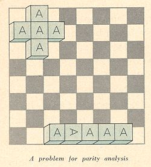
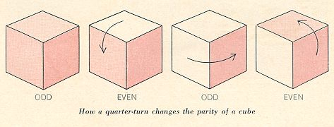
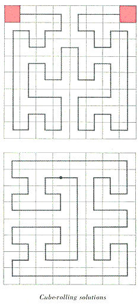
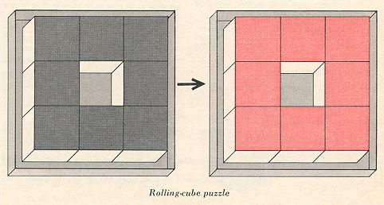

| Here are three rolling-cube puzzles from Martin Gardner’s old “Mathematical Games” columns in Scientific American. These puzzles can be seen as precedents to rolling-cube MAZES, which in turn are precedents to rolling-BLOCK mazes. The first excerpt is from Gardner’s column in the December 1963 Scientific American. This column had the title, “How to use the odd-even check for tricks and problem-solving.” |
|
 |
Sometimes the underlying parity structure of a system is so well camouflaged that only the most alert mathematician is able to spot it. A sterling example is provided by the following unusual problem adapted from Unterhaltsame Mathematik, a brilliant collection of puzzles by the German mathematician Roland Sprague. (An English translation by Thomas H. O’Beirne will soon be published in London by Blackic & Son Ltd.) Five alphabet blocks, all exactly alike and each with the letter A on one face only, are first placed on a checkerboard in the cross formation shown at the upper left of the board in the illustration at the left. The A sides of all five blocks are uppermost. The blocks are now moved from square to square by being tipped over along one edge, as one might move a large, heavy cubical box. In other words, each block is moved by a series of quarter turns each of which tips it from one square to an adjacent square. It is impossible, if one moves the blocks in this fashion, to arrange them in a row, anywhere on the board, with the A faces uppermost and all with the same orientation. It is possible to arrange them as shown in the row at the bottom of the board. Which block in this row started out as the center block of the cross formation?
|
|
One could, of course, obtain five alphabet blocks and find by actual test which block it must be, but with the right insight into the odd-even structure of the system the correct block can be identified simply by studying the picture. Moreover, the parity check provides a proof the empirical test does not. The test merely shows that one block in the row could have been the center one; it does not prove that no other block could have been if the right sequence of turns had been made. The parity proof will be explained next month.
Readers were asked last month to identify which one of five alphabet blocks in a row on a chessboard had been the center block in a previous formation before the blocks were moved by tipping them over an edge from square to square. It is obvious that if a block is moved an even number of times, it will rest on a square that is the same color as the square on which it started. An odd number of moves puts it on a square of opposite color. Not so obvious is the way in which odd and even apply to the orientations of each block.  Because each move of the block gives it a quarter-turn, it changes its parity with each move. After an even number of moves it will be on a square of the same color as the square from which it started, and it will have the same parity. After an odd number of moves it will have changed both color of square and parity. The center block originally rested on white. If it moved an odd number of times, it will be in the second formation on a black square, its parity altered. But all the blocks on black squares in the second formation have the same parity, therefore the center block is not among them. It must have moved an even number of times. This would put it on a white square, with its parity the same as before. Of the two blocks on white squares, only the second from the right has unaltered parity. Therefore it is the block we seek.
This excerpt is from Gardner’s November 1965 column:
To work on two of Harris’ best problems, obtain a small wooden cube from a set of children’s blocks or make one of cardboard. Its sides should be about the same size as the squares of your chessboard or checkerboard. Paint one side red. The cube is moved from one square to an adjacent one by being tipped over an edge, the edge resting on the line dividing the two cells. During each move, therefore, the cube makes one quarter-turn in a north, south, east or west direction.
Problem 1. Place the cube on the northwest corner of the board, red side up. Tour the board, resting once only on every cell and ending with the cube red side up in the northeast corner. At no time during the tour, however, is the cube allowed to rest with the red side up. (NOTE: It is not possible to make such a tour from corner to diagonally opposite corner.)
Problem 2. Place the cube on any cell an uncolored side up. Make a “re-entrant tour” of the board (one that visits every cell once and returns the cube to its starting square) in such a way that at no time during the tour, including at the finish, will the cube’s red side be up.
Both problems have unique solutions, not counting rotations and reflections of the path.

This excerpt is from Gardner’s March 1975 column:

The letters stand for up, down, left and right. The solution is symmetrical, in the sense that the second half repeats the moves of the first half in reverse order except that down moves become up and vice versa. (See Harris’ paper “Single Vacancy Rolling Cube Problems,” journal of Recreational Mathematics, Volume 7, Summer, 1974, pages 220-224. The journal is $10 per year to individual subscribers, $18 to institutions. It is published by Baywood Publishing Company, 43 Central Drive, Farmingdale, N.Y. 11735.)
Harris ends his article with a difficult problem that also involves eight cubes on an order-3 matrix. Color the cubes so that when they are on the matrix, with the center cell vacant, every exposed face is red and all hidden faces are uncolored. There will be just 24 red sides and 24 uncolored sides. The problem is to roll the cubes until they are back on the same eight cells, with the center cell vacant but with all the red sides hidden and the visible sides uncolored. Perhaps a reader can top Harris’ solution of 84 moves.
|